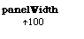
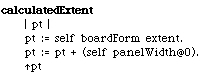
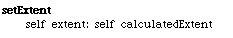
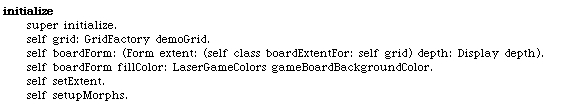
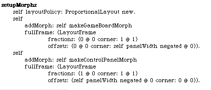
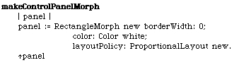
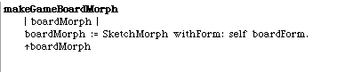
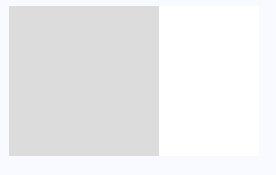

All of these instance methods belong on the LaserGame class. We will need a constant that defines the width of the control panel. I'd like to place the game board on the left side of the morph and have a vertical control panel on the right. We will also need to calculate the size of our morph, so that we don't get that tiny little rectangle we saw before. The #setExtent: method will be used to set our morph size during initialization.
  Here is the new #initialize method. It references a morph setup method we haven't written yet.
Setting up the morphs is simple if we think of having 2 vertical panes, with the control panel on the right and having a fixed width. Again, we reference 2 other methods still not written.
Here are the 2 methods that create the control panel and board morph. Note that the control panel is just a blank white rectangle and the board is a SketchMorph based on the game form.
 If we open the LaserMorph now it should look a little more like we expect.
It may not be easy to tell, but there's a white panel on the right side of the morph.